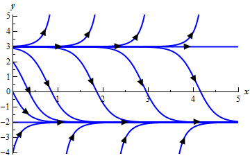

In the previous section we modeled a population based on the
assumption that the growth rate would be a constant. However, in reality this doesn’t make much
sense. Clearly a population cannot be
allowed to grow forever at the same rate.
The growth rate of a population needs to depend on the population
itself. Once a population reaches a
certain point the growth rate will start reduce, often drastically. A much more realistic model of a population
growth is given by the logistic growth
equation. Here is the logistic
growth equation.
In the logistic growth equation r is the intrinsic growth
rate and is the same r as in the
last section. In other words, it is the
growth rate that will occur in the absence of any limiting factors. K
is called either the saturation level
or the carrying capacity.
Now, we claimed that this was a more realistic model for a
population. Let’s see if that in fact is
correct. To allow us to sketch a
direction field let’s pick a couple of numbers for r and K. We’ll use  and K
= 10. For these values the logistics
equation is.
and K
= 10. For these values the logistics
equation is.
If you need a refresher on sketching direction fields go
back and take a look at that section. First notice that the derivative will be zero
at P = 0 and P = 10. Also notice that
these are in fact solutions to the differential equation. These two values are called equilibrium solutions since they are
constant solutions to the differential equation. We’ll leave the rest of the details on
sketching the direction field to you.
Here is the direction field as well as a couple of solutions sketched in
as well.
Note, that we included a small portion of negative P’s in here even though they really
don’t make any sense for a population problem.
The reason for this will be apparent down the road. Also, notice that a population of say 8 doesn’t
make all that much sense so let’s assume that population is in thousands or
millions so that 8 actually represents 8,000 or 8,000,000 individuals in a
population.
Notice that if we start with a population of zero, there is
no growth and the population stays at zero.
So, the logistic equation will correctly figure out that. Next, notice that if we start with a
population in the range 0 < P(0)
< 10 then the population will grow, but start to level off once we get close
to a population of 10. If we start with
a population of 10, the population will stay at 10. Finally if we start with a population that is
greater than 10, then the population will actually die off until we start
nearing a population of 10, at which point the population decline will start to
slow down.
Now, from a realistic standpoint this should make some
sense. Populations can’t just grow
forever without bound. Eventually the
population will reach such a size that the resources of an area are no longer
able to sustain the population and the population growth will start to slow as
it comes closer to this threshold. Also,
if you start off with a population greater than what an area can sustain there
will actually be a die off until we get near to this threshold.
In this case that threshold appears to be 10, which is also
the value of K for our problem. That should explain the name that we gave K initially. The carrying capacity or saturation level of
an area is the maximum sustainable population for that area.
So, the logistics equation, while still quite simplistic,
does a much better job of modeling what will happen to a population.
Now, let’s move on to the point of this section. The logistics equation is an example of an autonomous differential equation. Autonomous differential equations are
differential equations that are of the form.
The only place that the independent variable, t in this case, appears is in the
derivative.
Notice that if for some value then this will also be a solution to the
differential equation. These values are
called equilibrium solutions or equilibrium points. What we would like to do is classify these
solutions. By classify we mean the
following. If solutions start “near” an equilibrium
solution will they move away from the equilibrium solution or towards the
equilibrium solution? Upon classifying
the equilibrium solutions we can then know what all the other solutions to the
differential equation will do in the long term simply by looking at which
equilibrium solutions they start near.
So, just what do I mean by “near”? Go back to our logistics equation.
As we pointed out there are two equilibrium solutions to
this equation P = 0 and P = 10.
If we ignore the fact that we’re dealing with population these points break up the P number line into three
distinct regions.
We will say that a solution starts “near” an equilibrium
solution if it starts in a region that is on either side of that equilibrium
solution. So solutions that start “near”
the equilibrium solution P = 10 will
start in either
and solutions that start “near” P = 0 will start in either
For regions that lie between two equilibrium solutions we
can think of any solutions starting in that region as starting “near” either of
the two equilibrium solutions as we need to.
Now, solutions that start “near” P = 0 all move away from the solution as t increases. Note that
moving away does not necessarily mean that they grow without bound as they move
away. It only means that they move
away. Solutions that start out greater
than P = 0 move away, but do stay
bounded as t grows. In fact, they move in towards P = 10.
Equilibrium solutions in which solutions that start “near”
them move away from the equilibrium solution are called unstable equilibrium points or unstable equilibrium solutions.
So, for our logistics equation, P
= 0 is an unstable equilibrium solution.
Next, solutions that start “near” P = 10 all move in toward P
= 10 as t increases. Equilibrium solutions in which solutions that
start “near” them move toward the equilibrium solution are called asymptotically stable equilibrium points
or asymptotically stable equilibrium
solutions. So, P = 10 is an asymptotically stable equilibrium solution.
There is one more classification, but I’ll wait until we get
an example in which this occurs to introduce it. So, let’s take a look at a couple of examples.
|
Example 1 Find
and classify all the equilibrium solutions to the following differential
equation.
Solution
First, find the equilibrium solutions. This is generally easy enough to do.
So, it looks like we’ve got two equilibrium solutions.
Both y
= -2 and y
= 3 are equilibrium solutions. Below is the sketch of some
integral curves for this differential equation. A sketch of the integral curves or
direction fields can simplify the process of classifying the equilibrium
solutions.

From this sketch it appears that solutions that start
“near” y = -2 all move towards it
as t increases and so y = -2 is an asymptotically stable
equilibrium solution and solutions that start “near” y = 3 all move away from it as t increases and so y =
3 is an unstable equilibrium solution.
|
This next example will introduce the third classification
that we can give to equilibrium solutions.
|
Example 2 Find
and classify the equilibrium solutions of the following differential
equation.
Solution
The equilibrium solutions are to this differential
equation are y
= -2, y = 2, and y = -1.
Below is the sketch of the integral curves.
From this it is clear (hopefully) that y = 2 is an unstable
equilibrium solution and y
= -2 is an asymptotically stable equilibrium solution. However, y = -1 behaves
differently from either of these two. Solutions that start above it move
towards y = -1 while solutions that
start below y = -1 move away as t increases.
In cases where solutions on one side of an equilibrium
solution move towards the equilibrium solution and on the other side of the
equilibrium solution move away from it we call the equilibrium solution semi-stable.
So, y
= -1 is a semi-stable equilibrium solution.
|